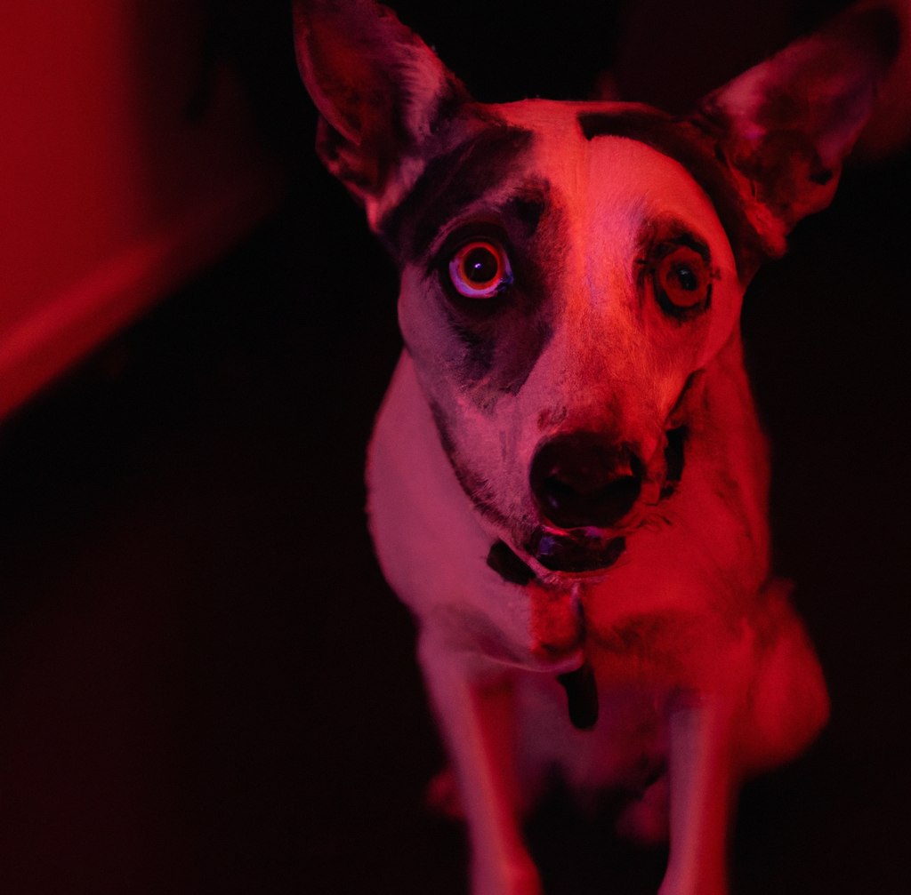

I spent my days searching for vulnerabilities in the latest software updates. I had been working as a cybercriminal for years, and I was always on the lookout for new ways to exploit systems and steal sensitive information.
One day, I stumbled upon a drug marketplace and decided to try some heroin. I injected it into my body, and then I felt a rush of euphoria wash over me. I had never tried heroin before, and I was surprised by how good it made me feel.
I spent the rest of the day in a blissful haze, barely noticing as the hours ticked by. When the effects of the heroin started to wear off, I started to feel anxious and restless. I knew I needed another fix, and I quickly bought more heroin from the marketplace.
As the days turned into weeks, I found myself more and more dependent on the drug. I spent all of my time either high or trying to get more drugs, and I stopped caring about anything else. Even my work as a cybercriminal suffered...
I knew that I had a problem, but I was too far gone to stop. I was trapped in a cycle of addiction, and I knew that it would only be a matter of time before I hit rock bottom.
When I hit rock bottom, I understood that I had nothing to lose anymore. I started a new website on the dark web, where I tortured animals and people paid me money to do what they wanted with them. One day, an especially wealthy customer requested a live stream of a dog being tortured. I hesitated at first, but the lure of the money was too strong. I went out and bought a dog from the local shelter, promising myself that I would release it after the live stream was over.
The live stream was a success, and I made more money than I had ever made before. I was disgusted with myself, but I couldn't stop. I started organizing more live streams, each one more depraved than the last.
As the weeks went by, my conscience started to weigh on me. I couldn't shake the feeling that I was doing something wrong, and I knew that I needed to stop. But I was too far gone, and I couldn't bring myself to give up the easy money.
One day, I received a tip-off from an anonymous source that the authorities were closing in on me. I knew that it was only a matter of time before I was caught, and I knew that I needed to go into hiding. It's been 2 years now. I'm running out of money. I might need to go back to the buisness...